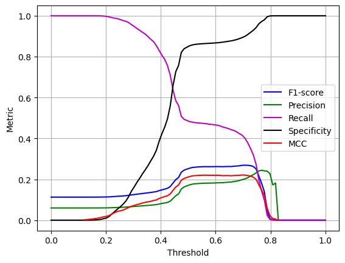

preds = load_predictions()model_evaluation
The model evaluation module provides a set of functions for model evaluation
metrics_by_threshold
metrics_by_threshold (y_true, y_proba, n_points:int=100)
Returns dataframe with several binary classification metrics as a function of the decision threshold
| Type | Default | Details | |
|---|---|---|---|
| y_true | Ground truth (correct) target values | ||
| y_proba | Estimated probability as returned by a binary classifier | ||
| n_points | int | 100 | Number of points on which to evaluate |
To test we load the predictions dataset
and calculate the metrics for 100 different thresholds
mthr = metrics_by_threshold(preds['y_true'], preds['y_proba'])we plot the results
fig, ax = plt.subplots()
ax.plot(mthr['thr'], mthr['f1'], color='b', label=f'F1-score')
ax.plot(mthr['thr'], mthr['precision'], color='g', label=f'Precision')
ax.plot(mthr['thr'], mthr['recall'], color='m', label=f'Recall')
ax.plot(mthr['thr'], mthr['specificity'], color='k', label=f'Specificity')
ax.plot(mthr['thr'], mthr['mcc'], color='r', label=f'MCC')
ax.legend()
ax.grid()
ax.set_xlabel('Threshold')
ax.set_ylabel('Metric')
plt.show()
K-S Statistic
The Kolmogorov–Smirnov test (K-S test or KS test) is a nonparametric test of the equality of continuous (or discontinuous), one-dimensional probability distributions that can be used to compare a sample with a reference probability distribution (one-sample K–S test), or to compare two samples (two-sample K–S test). In essence, the test answers the question What is the probability that this collection of samples could have been drawn from that probability distribution? or, in the second case, What is the probability that these two sets of samples were drawn from the same (but unknown) probability distribution?.
Note that the two-sample test checks whether the two data samples come from the same distribution. This does not specify what that common distribution is (e.g. whether it’s normal or not normal). Again, tables of critical values have been published. A shortcoming of the univariate Kolmogorov–Smirnov test is that it is not very powerful because it is devised to be sensitive against all possible types of differences between two distribution functions.
The function bin_class_ks uses scipy ks_2samp() to test whether the distributions of the positive and negative classes from a binary classifier are from the same distribution
bin_class_ks
bin_class_ks (y_true, y_proba)
| Details | |
|---|---|
| y_true | Ground truth (correct) target values {0,1} |
| y_proba | Estimated probability as returned by a binary classifier |